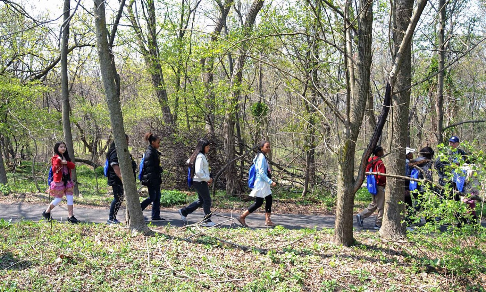

Small-patient emergencies
- Snack circle goes quiet. A four-year-old with a mouthful of trail mix stops making noise. Quiet is the alarm — the choking response is fast, physical, and not something to improvise for the first time that morning.
- The first sting. No allergy on file because there’s no file yet — first stings are first data. Stinger out fast, then watch: hives alone is one plan, hives plus a wheeze is epi and 911.
- Puddle season. The three-year-old who sat down in the creek an hour ago is now oddly quiet and doesn’t want to play. Small bodies cool fast and complain little — warm, dry, calories, and watch.
Circle-time study order
Ordered for the youngest patients:
- Airway & Breathing — choking response and positioning — the skills this age group demands
- Anaphylaxis — first reactions happen on your watch, without a history to warn you
- Cold Injuries — little bodies lose heat fast and report it late
- Bites & Stings — stingers out fast, plus the end-of-session tick check
- Patient Assessment — assessing a patient whose chief complaint is crying
Then pressure-test it
Interactive scenarios — one decision at a time, tempting mistakes included, debrief at the end:
- Snoring Isn’t Sleeping — the airway you can hear — positioning under pressure
- Find the Epi — the reaction that escalates while you decide
- The Burrito — cold and wet, wrapped right
The certification question, honestly. “Wilderness First Aid” isn’t a regulated credential. No government body defines what a WFA card means — it means whatever the company that printed it says it means. What counts in front of a patient is whether you can do the work. This course teaches the work, free, and issues a record of completion — not a certificate, and we won’t pretend otherwise. Childcare licensing in most states requires pediatric first aid and CPR from an approved provider, and a pediatric-specific class is worth taking on its own merits. Those requirements stand — this adds the outdoor judgment on top. If nobody requires you to hold a card, what you need are the skills, not the laminate.
What this is
Fifteen lessons, a 40-question knowledge check, sixteen practice scenarios, a printable field reference card, and a kit checklist. Free, no account, nothing recorded about you, source on GitHub. It teaches decision-making, not hands-on skill — practice the hands-on parts on a real, padded, complaining friend.
Others out there with a crowd of kids: dog walkers & off-leash trail group leaders · scout & youth outdoor leaders · summer camp counselors & activity directors